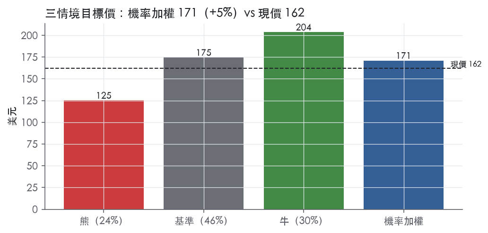
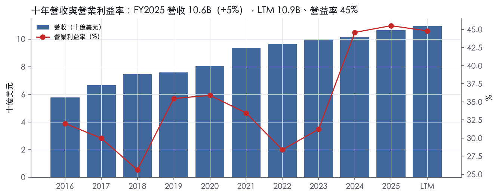
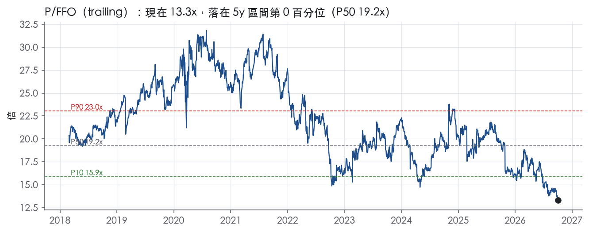
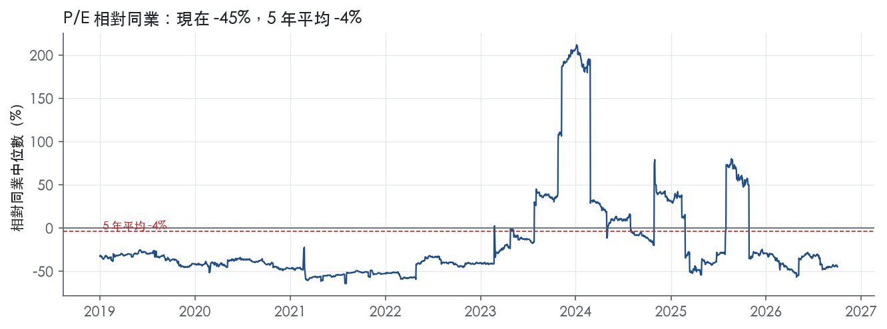
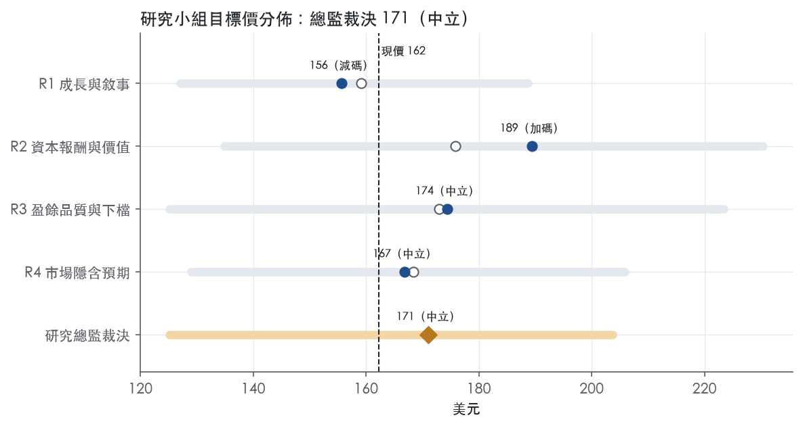
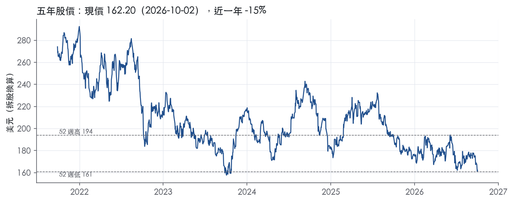

評等總表 › 不動產 › AMT
盈餘低於市場、倍數持平，中性｜評等 中立｜目標價 171
| 評等 | 中立 |
| 12 個月目標價 | 171 美元 |
| 現價 | 162.20 美元（2026-10-02） |
| 預期報酬 | 股價 +5.4%＋股息 4.4%＝總報酬 +9.8%；同業籃門檻 10.0%，超額 -0.2% |
| 估值方法 | P/FFO 14.0x，套在第 5–8 季的FFO（也就是一年後的未來四季） |
| 三情境 | 熊 125／基準 175／牛 204 |
| 研究流程 | 四位研究員兩輪辯論＋研究總監裁決 |
| 資料來源 | SEC EDGAR XBRL、Tiingo、FRED（全免費） |
盈餘低於市場、倍數持平，中性（研究總監裁決，四位研究員兩輪辯論後）
評等 中立｜12 個月目標價 171 美元（總監三情境機率加權 171 與研究員中位數 171 各半）｜現價 162.20（2026-10-02）
預期報酬：股價 +5.4%＋股息 4.4%＝總報酬 +9.8%。同業籃門檻 10.0%，超額 -0.2%。
估值方法：P/FFO 14.0x，套在第 5–8 季的FFO（也就是一年後的未來四季）。三情境：熊 125（24%）／基準 175（46%）／牛 204（30%）。
什麼會讓研究總監改變看法：FY2026Q3 營收年增 ≥5.5% 且來自有機加租，我上修 y1 並把錨往 3 年帶 P10 移；AT&T Mexico 準備大幅追加、營收回沖或第二家大客戶扣租，我上調熊機率並下修倍數。
| 過去四季（實際，FY2026Q2） | 未來四季 | 第 5–8 季 | 第 9–12 季 | |
|---|---|---|---|---|
| 營收（B） | 10.9B | 11.3B | 11.9B | 12.5B |
| 營收成長 | 6.6% | 3.5% | 5.0% | 5.0% |
| 營業利益率 | 44.8% | 44.8% | 45.0% | 45.0% |
| 每股 FFO（美元） | 12.21 | 11.70 | 12.47 | 13.22 |
| FFO 成長 | 23.4% | -4.1% | 6.5% | 6.1% |
| 每股股息（美元） | 6.89 | 6.89 | 6.89 | 6.89 |
| EPS（美元） | 7.31 | 7.10 | 7.63 | 8.15 |
| P/FFO（現價） | 13.3x | 13.9x | 13.0x | 12.3x |
| 股息殖利率（現價） | 4.4% | 4.2% | 4.2% | 4.2% |
過去四季為申報數字；預測為研究總監的假設、程式計算。倍數與殖利率都用現價計算，用來看現價對應各期獲利的高低。
| 情境 | 機率（歷史） | 故事 | 未來四季營收成長 | 第 5–8 季營益率 | 倍數 | 目標價 | 股價漲跌 |
|---|---|---|---|---|---|---|---|
| 熊 | 24%（24%） | 對應風險表第 2 條擴散至第 1 條、第 3 條放大：AT&T Mexico 仲裁不利追溯減租、DISH 永久流失，固定地租使利潤率去槓桿 | 1.5% | 43.0% | 11.0x | 125 | -22.8% |
| 基準 | 46%（43%） | DISH 壓低 NTM 成長至 3.5%，2027 年回到 5%，仲裁以小額準備收尾，倍數略高於市場持平 | 3.5% | 45.0% | 14.0x | 175 | 7.6% |
| 牛 | 30%（33%） | AT&T Mexico 信託款撥回或 DISH 和解付款，資料中心帶動季增恢復，倍數回到 3 年帶 P10 附近 | 5.0% | 46.0% | 15.5x | 204 | 25.6% |
目標價由程式依研究總監的驅動與倍數計算；機率由研究總監給定。括號內是歷史頻率：把這檔股票過去十年 12 個月報酬的波動形狀，置中在基準情境，結果落在各情境附近的比例。

四位研究員用不同方法各自估值，回應研究總監的質疑後交出第二輪，最後由總監逐點裁決。各研究員的主張見第七章，裁決理由見第八章，完整論證見《研究底稿》。
| 立場（一輪→二輪） | 加權目標價（一輪→二輪） | 評等（一輪→二輪） | 第二輪倍數 | 熊～牛目標價 | |
|---|---|---|---|---|---|
| R1 成長與敘事 | 中性→看空 | 159→156 | 減碼→減碼 | 13.3x | 127～189 |
| R2 資本報酬與價值 | 中性→看多 | 176→189 | 中立→加碼 | 16.5x | 135～230 |
| R3 盈餘品質與下檔 | 中性→中性 | 173→174 | 中立→中立 | 14.0x | 125～223 |
| R4 市場隱含預期 | 中性→中性 | 168→167 | 中立→中立 | 13.4x | 129～206 |
| 研究總監裁決 | 中性 | 171 | 中立 | 14.0x | 125～204 |
目標價由程式依各自的驅動與倍數計算；評等＝機率加權總報酬 − 同業籃門檻。
American Tower 是全球最大的多租戶通信不動產REIT之一，核心業務是把通信站址空間出租給無線服務商、廣播電視公司、無線數據業者、政府機關與市政單位¹。公司把這塊業務（含資料中心）統稱為「property operations」，2025年佔總營收97%¹。此外在美國提供站址應用、區域劃分與許可、結構與掛載分析、施工管理等「services operations」，主要是為了配合租賃業務新增租戶與設備，2025年佔總營收3%¹。截至2025年12月31日，公司通信不動產組合共149,686個站址，分布於美國與加拿大42,224個、非洲與亞太27,857個、歐洲32,524個、拉丁美洲47,081個，另有30座資料中心跨11個美國市場¹。本質上這是一家靠長期租約合約、逐年調漲租金鎖住現金流的基礎設施收租生意。
公司六個報告分部分別是美國與加拿大地產、非洲與亞太地產、歐洲地產、拉丁美洲地產、資料中心、服務¹。2025年各地產分部佔合併總營收比重：美國與加拿大49%、非洲與亞太13%、歐洲9%、拉丁美洲15%、資料中心10%¹；相較2023年美國與加拿大53%、拉丁美洲18%的比重，可以看出美國與加拿大、拉丁美洲佔比在下滑，資料中心與非洲／亞太比重在上升¹。通信站址本身貢獻property segment營收的82%（2025年），其餘來自資料中心、DAS網路、光纖、物業權益與共用發電機／電力解決方案¹。租約平均初始不可解約期5–10年，美國租金年調幅約3%，國際市場則多綁通膨指數，截至2025年底公司估計未來非取消性租約收入超過540億美元（未計直線攤銷影響）¹。2025年整年租戶流失率（churn）約2%，主要來自美國與加拿大分部¹。資料中心業務是2021年收購CoreSite後建立的新成長腿，公司視其為能帶動邊緣運算機會、進一步放大既有鐵塔資產價值的業務¹。從財年營收、EBITDA、營益率的多年走勢看，FY2024與FY2025營益率躍升至44.6%、45.5%（資料包年度表），顯示公司在營運效率與組合優化上有實質進展。
客戶高度集中在少數大型電信商，公司自己在10-K風險因子中點名這是關鍵風險¹。美國與加拿大分部，AT&T、T-Mobile、Verizon三家合計貢獻該分部85%營收¹；非洲與亞太分部，Airtel與MTN合計貢獻81%¹；歐洲分部，Telefónica單一客戶貢獻70%¹；拉丁美洲分部，América Móvil、AT&T、Telefónica、TIM四家合計貢獻71%¹。通路上公司直接與電信商簽長期租約，另透過第三方管理代租屋頂與鐵塔站址¹。公司以REIT身分運作，須將至少90%的REIT應稅所得分配給股東，國際資產仍須在當地納稅¹。近年公司持續調整國際組合，2023年出售墨西哥光纖與波蘭業務，2024年出售澳洲、印度、紐西蘭業務，2025年出售南非光纖業務，資金轉向美國、加拿大、歐洲與資料中心等已開發市場投資¹。這種「先進市場加碼、新興市場選擇性退出」的組合再平衡，本質上是在用資產負債表換取現金流確定性。
FY2025Q3營收27.2億美元，年增7.7%，營益率45.4%，淨利9.1億美元，EPS 1.82美元（資料包最近八季表）。FY2025Q4（年度倒推）營收27.4億美元，年增7.5%，但營益率回落至42.4%，淨利8.4億美元、EPS 1.79美元。FY2026Q1營收27.4億美元，年增6.8%，營益率回升到45.3%，淨利8.8億美元、EPS 1.84美元。FY2026Q2營收27.5億美元，年增4.7%，營益率46.2%為近四季最高，淨利8.9億美元、EPS 1.86美元，自由現金流11.7億美元同樣是近四季高點。整體趨勢是營收年增率從Q3的7.7%逐季收斂到Q2的4.7%，但營益率在波動後站穩45%以上，獲利品質優於FY2025Q4那一季。截至FY2026Q2，LTM營收109.4億美元、EBITDA 69.7億美元、自由現金流39.6億美元。沒有取得本期新聞稿，因此次季指引內容無法引用。
公司明確說最高邊際回報來自在既有站址上加租新客戶與新設備，因為美國5G部署持續、國際市場則是4G深化與部分市場邁向5G，公司相信多數鐵塔仍有餘裕容量，即便接近結構上限也能以相對低的資本支出升級¹。第二個引擎是投資與選擇性擴張資產組合，公司點名2021年收購CoreSite後布局資料中心，認為這能帶動強勁、持續性的成長，也能透過邊緣運算機會放大既有鐵塔資產價值¹。公司也強調持續改善營運效率，包括縮短租約處理與結構分析週期，並推動「電力即服務」（PaaS）計畫¹。資本配置策略目標是同時提升每股調整後營運資金（AFFO）與投入資本回報率，分配優先順序依序是REIT法定配息、資本支出、符合財務政策的債務償還，剩餘資金才用於收購、平台擴張與股票回購¹。公司維持投資等級信評，2025年底有111億美元可動用流動性，以此支撐持續投資能力¹。從trailing倍數看，目前EV/EBITDA 15.9x、P/E 22.2x都落在近五年極低分位（分位數0.1%），顯示市場目前給的估值遠低於過去常態區間，這與公司敘述的穩健租約現金流故事形成明顯估值落差。公司把資料中心定位為第二成長曲線，但10-K並未揭露資料中心分部單獨的毛利率或資本回報數字，這部分投資人只能靠公司揭露的10%營收佔比去外推，透明度仍有限。整體而言，公司策略敘事清楚聚焦「既有資產加租、選擇性擴張、效率提升、資產負債表紀律」四件事，但缺乏新聞稿佐證最新一季的管理層口吻與指引用語，使本章對最新動態的描述只能停留在數字層面。

AMT 評為窄護城河，趨勢穩定。資產層級的優勢很真實：轉換成本高，新塔進入門檻也高。公司層級的數字卻撐不起寬評級：十年 ROIC 平均低於資本成本代理值，只有最近兩年勉強越線。我們有把握未來 5 年 ROIC 仍高於資本成本，但沒有把握撐到 10 年以上。
轉換成本是第一來源。
效率規模是第二來源。
資料中心業務沒有列入優勢來源。公司自己列的競爭因素是位置、容量、電網、互連密度、價格與服務，同類業者眾多¹。我們看不到它具備與鐵塔同等的護城河證據。
數字只部分支持護城河主張，ROIC 與資本成本的比較和寬評級直接衝突。
ROIC 低於資本成本。
我們維持窄、不降為無，有三個理由：
利潤率不穩定。
兩個指標不能當證據。
最大的侵蝕來源是客戶集中帶來的議價力，其次是利率墊高資本成本。
客戶集中。
替代供給與監管。
資本成本。
目標倍數應與同業塔商持平，不給溢價。理由是租約結構與進入門檻確實支撐長期現金流，但 ROIC 只是勉強高於資本成本，高倍數只能合理延續約 5 年，不宜用 10 年以上的超額報酬期去折現。資料中心業務應按資料中心同業倍數另計，不該套用鐵塔倍數。
| 指標 | 最新 | 十年平均 | 標準差 | 最低 | 最高 |
|---|---|---|---|---|---|
| ROIC | 10.8% | 8.4% | 1.6% | 5.8% | 10.8% |
| 毛利率 | 99.4% | 99.4% | 0.1% | 99.3% | 99.5% |
| 營業利益率 | 45.5% | 34.2% | 6.2% | 25.6% | 45.5% |
| FCF 利潤率 | 35.5% | 33.4% | 5.4% | 18.9% | 38.1% |
| ROE | 74.7% | 40.5% | 17.9% | 19.1% | 74.7% |
程式計算。資本成本代理值（10 年債＋5%）：10.2%；ROIC 平均減資本成本：-1.8%；ROIC 有資料的 9 年中，高於資本成本 2 年。
AMT 的現金轉換與應計比率全部是綠燈，盈餘不是靠會計估計堆出來的；真正的體質缺口在槓桿偏高、利息保障僅在及格邊緣，加上 FY2025 應收帳款成長明顯快於營收，後者可以從 AT&T Mexico 與 DISH 兩筆租金爭議追溯出來源。整體判為「中」，因為紅旗存在但可解釋，不是現金長期跟不上盈餘的那種「低」等級。
現金完全跟得上，而且跟得很寬裕。LTM 營業現金流／淨利 1.64x，近三年平均 2.62x，十年平均 2.44x，三個區間都遠高於 1.00x 的綠燈門檻（計分表）。FCF／淨利 LTM 1.13x、近三年 1.73x、十年 1.69x，同樣全線在綠燈（計分表）。應計比率是負值（LTM -3.6%、近三年 -4.8%、十年 -4.9%），代表淨利持續低於現金流，不是靠應計項目灌出來的盈餘（計分表）。唯一要提醒的是 CFO/淨利的倍數會因為折舊攤銷認列方式（REIT 房地產折舊基數大）被放大，但這屬於產業結構性特徵，不是盈餘品質警訊。
沒有拿到最新財報新聞稿，以下數字取自 10-K Item 7 的 Adjusted EBITDA 與 AFFO 調整表（FY2025 vs FY2024）。Adjusted EBITDA 由淨利加回：所得稅準備 415.7、利息費用 1,359.4、折舊攤銷及增提 2,041.6、股權薪酬 174.2，加回後達 7,130.0（百萬美元）²。股權薪酬加回金額不大且逐年下降（174.2 對比 FY2024 的 192.7），我認為這部分加回合理，SBC 本身占營收比例也僅 1.5%–2.0%，不是靠股權稀釋撐盈餘的公司。
AFFO 進一步剔除：直線租金收入調整（101.0）、股權薪酬 174.2、所得稅遞延等調整 150.0、非房地產相關折舊攤銷 142.0、其他收支 576.2（其中包含匯兌損失 809.4 對比去年同期匯兌利得 308.3）、以及資本改良支出（185.2）²。匯兌損失這塊是真實的、非營運性的波動，加回合理；但資本改良支出被扣除後才算出 AFFO，代表 AFFO 並非完全剔除資本開支的現金指標，估值時不能把 AFFO 當成無摩擦的自由現金流。另外，房地產相關折舊攤銷占調整項目大宗（1,899.6），這是 REIT 業的標準做法，加回本身不是盈餘品質問題，但代表 GAAP 淨利天然偏低、不能直接用 GAAP EPS 做同業比較。
槓桿是真正該在意的地方。淨負債／EBITDA LTM 5.08x、近三年平均 5.53x、十年平均 5.67x，全部落在＞3.00x 的紅燈區（計分表）。利息保障倍數 LTM 3.52x、近三年 3.01x、十年 2.99x，在綠燈 8.00x 與紅燈 3.00x 之間的黃燈區，近三年與十年平均已經貼著紅燈邊緣（計分表）。10-K 揭露 FY2025 利息費用 1,359.4（較 FY2024 的 1,404.5 下降，主因平均負債餘額下降）²，顯示公司有在降槓桿，但幅度有限，沒有改變體質分類。
股東回饋面：稀釋股數年變動 LTM -0.1%，代表公司淨回購減少股數，沒有稀釋風險。（股利＋回購）／淨利 LTM 92.6%、近三年平均 162.5%、十年平均 130.7%，長期超過 100%，意味著公司部分年度是靠舉債而非當年盈餘在支付股利與回購（計分表）。配合淨負債持續在 5x 以上的事實，這是同一個故事的兩面：AMT 選擇用槓桿維持 REIT 式的高配息，而不是把槓桿降下來。
紅旗一：淨負債／EBITDA 紅燈（LTM 5.08x，近三年平均 5.53x）。 這不是一次性事件，十年平均也是 5.67x，數字結構性地落在紅燈區。10-K 摘錄的 Liquidity and Capital Resources 一節被截斷，沒有取得管理層對槓桿目標的完整論述，無法從原文找到「槓桿即將下降」的明確承諾。我的判斷：這是真問題但非失控——FY2025 利息費用較前一年下降、平均負債餘額減少²，顯示方向正確，但離「可信賴」的槓桿水準還有距離，估值應對此打折，不建議視為假警報。
紅旗二：應收帳款成長比營收快 15.3pp（FY2025）。 這條可以追溯到兩個具體客戶爭議。AT&T Mexico（占 2025 年租戶營收約 300M）自 2025 年初起扣留租金，公司在 2025 年提列約 30M 準備金，2025 年 9 月雙方協議大部分欠款將匯入由獨立受託人監管的信託帳戶，而非直接付現²——這代表帳上認列的應收／信託資產在成長，但現金收款被延後。DISH 則在 2025 年 9 月通知欲解除 SCA 義務，截至 2026 年 1 月已違約未付款，DISH 占 2025 年總物業營收約 2%、美加區營收約 4%²。兩個案子加總足以解釋應收帳款成長快於營收的異常，屬於「可解釋但要持續追蹤」的紅旗，不是會計口徑假警報，也不是已經結束的一次性事件——DISH 爭議仍在訴訟中，AT&T Mexico 的仲裁排到 2026 年 8 月開庭²，後續現金能否全額收回仍有不確定性。
盈餘品質整體可信，但要用 AFFO／Adjusted EBITDA 搭配 GAAP 數字交叉看，不要單用 GAAP EPS 做倍數比較，因為房地產折舊攤銷結構性壓低 GAAP 淨利。對估值盈餘不需要因現金轉換或 SBC 打折，但對淨負債／EBITDA 長期在 5x 以上這件事，倍數應該用偏保守的區間（EV/EBITDA 而非 P/E 當主要錨點），且目前 EV/EBITDA 15.9x 已低於 10 年中位數，顯示市場本身已部分反映槓桿與客戶收款風險。AT&T Mexico／DISH 的應收帳款缺口值得在現金流假設裡扣一筆壞帳準備緩衝，但不需要對整體盈餘品質評級降級。
| 項目 | LTM | 近三年 | 十年 | 燈號 | 規則 |
|---|---|---|---|---|---|
| 營業現金流／淨利 | 1.64x | 2.62x | 2.44x | 綠 | ≥1.00x 綠、<0.80x 紅 |
| 自由現金流／淨利 | 1.13x | 1.73x | 1.69x | 綠 | ≥0.90x 綠、<0.60x 紅 |
| 應計比率（(淨利−CFO)／平均總資產） | -3.6% | -4.8% | -4.9% | 綠 | ≤0.0% 綠、>5.0% 紅 |
| SBC／營收 | 1.5% | 1.9% | 1.7% | 綠 | ≤3.0% 綠、>8.0% 紅 |
| 淨負債／EBITDA | 5.08x | 5.53x | 5.67x | 紅 | ≤1.50x 綠、>3.00x 紅 |
| 利息保障倍數（營業利益／利息） | 3.52x | 3.01x | 2.99x | 黃 | ≥8.00x 綠、<3.00x 紅 |
| 稀釋股數年變動 | -0.1% | 0.4% | 1.0% | 綠 | ≤0.0% 綠、>3.0% 紅 |
| （股利＋回購）／淨利 | 92.6% | 162.5% | 130.7% | 綠 | ≥50.0% 綠、<0.0% 紅 |
| 應收帳款成長 − 營收成長（FY2025） | +15.3pp | — | — | 紅 | ≤5pp 綠、>15pp 紅 |
程式計算；燈號以 LTM（無則近三年平均）判定。
| 風險 | 觸發指標（看什麼數字、在哪裡看） | 對 EPS 的影響方向與粗略幅度 | 未來 12 個月發生機率（高／中／低） | 出處 |
|---|---|---|---|---|
| 客戶集中＋信用惡化：T-Mobile 18%、AT&T 17%、Verizon 14%、Telefónica 10% 合計貢獻2025年營收59% | 季報揭露的前四大客戶營收佔比變化；10-Q應收帳款減損／壞帳準備金額；客戶信評展望 | 負向、大：單一大客戶毀約或大幅調降租金將直接衝擊property segment收入與淨利 | 中 | 10-K 年報 FY2025 Item 1A（風險因素） |
| 現有客戶爭議擴大：AT&T Mexico仲裁（2025年營收約3億美元、已提列3千萬美元準備）＋DISH自2026年1月SCA違約 | 每季10-Q揭露的訴訟準備金變動；AT&T Mexico託管帳戶餘額；DISH付款狀態公告 | 負向、中：若仲裁不利或DISH持續違約，需追加減損並喪失未來租約收入 | 中 | 10-K 年報 FY2025 Item 1A（風險因素） |
| 高槓桿＋利率敏感：合併負債371.9億美元、淨負債354.3億美元，ust10y已達5.24% | 每季總債務與淨負債變化；再融資利率對比到期債券票面利率；信評機構評等公告 | 負向、中：若信評被降至投資等級以下，融資成本上升直接壓縮FFO與EPS | 中 | 【判，數字引自資料包】 |
| 客戶流失與技術替代：2025年churn約2%，主因美國與加拿大分部；RAN共享、小基站、衛星技術可能降低鐵塔需求 | 每季揭露churn率；美國與加拿大分部營收年增率趨勢（已從FY2025Q3的7.7%降至FY2026Q2的4.7%，is.revenue年增率，資料包八季表） | 負向、中：churn率若明顯高於2%歷史水準，直接侵蝕organic growth與租金收入 | 中 | ³＋【判，成長趨緩數字引自資料包】 |
| 國際營運與外匯風險：拉丁美洲、非洲與亞太合計貢獻2025年營收28%，公司未進行重大外匯避險 | 拉丁美洲／非洲貨幣對美元匯率；各國徵用、國有化或頻譜執照限制公告；分部營收外幣貢截 | 負向、中：貨幣貶值直接侵蝕以美元報告的分部營收與資產價值 | 低 | 10-K 年報 FY2025 Item 1A（風險因素） |
客戶集中度是結構性風險，不是尾部風險。公司自己揭露T-Mobile、AT&T、Verizon三家就佔美國與加拿大分部營收85%，Telefónica一家佔歐洲分部70%，Airtel與MTN合計佔非洲與亞太81%³。這不是「萬一發生」的風險，是公司商業模式的既定事實——四個客戶關係的健康程度直接決定公司過半營收的穩定性。監測方法很具體：每季10-K／10-Q都會重新揭露這四家佔比，只要任何一家佔比快速下滑或公司揭露新增減損準備，就是訊號。
兩個具體的客戶爭議已經在走法律程序，不是假設情境。AT&T Mexico對MLA租金計算提出異議，要求追溯與未來租金減免，雖然2025年9月雙方已達成部分還款協議，但剩餘應收款與未來租金仍存入託管帳戶，等待仲裁最終結果，公司已提列約3千萬美元準備並預期會持續提列³。DISH則是在2025年9月遞交聲明主張免除SCA義務，2026年1月已構成違約，公司正尋求法院宣告判決其義務仍然有效³。DISH佔2025年總物業營收約2%、美國加拿大物業營收約4%³，單獨看不大，但疊加母公司Echostar已開始出售頻譜並放棄部分5G網路部署的動作³，顯示這條線的惡化方向是確定的，只是速度未知。
槓桿是放大器，不是獨立風險。公司合併負債371.9億美元，淨負債354.3億美元，在ust10y已到5.24%的環境下，任何到期債務再融資都會比過去幾年貴。10-K自己點名槓桿上升可能導致信評降至投資等級以下，進而喪失投資等級條件下的融資條件³。目前trailing EV/EBITDA僅15.9x，位於近五年0.1%分位，市場已經在用偏低倍數反映這個風險，但這不代表風險已經解除，只代表市場已部分計入。
Churn與技術替代是慢性侵蝕，不是爆雷。2025年churn約2%主要來自美國與加拿大分部³，公司點名RAN共享、小基站、衛星技術都可能在無補償情況下讓客戶把流量從鐵塔移走³。配合資料包看，美國與加拿大分部佔比已從FY2023的53%降到FY2025的49%（業務概況章引用數字），且整體營收年增率從FY2025Q3的7.7%收斂到FY2026Q2的4.7%（is.revenue年增率，資料包八季表），兩者疊加顯示成長引擎本身在放緩，不只是基期效應。
國際與外匯風險是既有事實，公司明確說沒有做重大避險。拉丁美洲（15%）、非洲與亞太（13%）合計貢獻2025年營收28%³，公司坦承「未曾對非美元業務進行重大貨幣避險操作」³。這代表任何新興市場貨幣劇貶都會直接、全額反映在報告營收與資產價值上，沒有緩衝墊。
資料中心業務的獨立經濟性缺乏揭露。公司把資料中心定位為第二成長曲線，2025年佔總營收10%，但10-K沒有單獨揭露這個分部的毛利率、資本回報率或客戶集中度，也沒有說明AI驅動的資料中心用電密度需求是否已經讓既有30座設施面臨升級資本支出壓力。投資人目前只能從營收佔比外推，一旦這塊業務的真實回報率低於公司在其他業務賺到的水準，會在不知不覺中拖累合併ROIC，但現有揭露完全看不出這個風險的大小。
股票回購與REIT配息義務的資金排擠順序沒有量化。公司資本配置策略寫明優先順序是REIT法定配息、資本支出、債務償還，剩餘才給回購，但沒有揭露在利率維持高位、FCF成長放緩（FY2026Q2 FCF年增雖創近四季高點但整體營收成長已降至4.7%）的情境下，這個優先順序是否會被迫擠壓回購或資本支出。這是一個會直接影響每股FFO/AFFO，但公司完全沒有量化情境分析的空白。
現價 162.20 對應 trailing（過去四季）P/FFO 13.3x、EV/EBITDA 15.9x、股息殖利率 4.4%、P/E 22.2x。主要估值倍數 P/FFO 現在 13.3x，落在5 年區間第 0 百分位（P10／P50／P90 = 15.9x／19.2x／23.0x）。

把程式的機械基準預測放到現價下，市場付的前瞻倍數是：P/FFO（未來四季） 13.3x、P/E（未來四季） 21.9x、P/FFO（第 5–8 季） 12.3x、P/E（第 5–8 季） 20.1x。反推 DCF 顯示市價隱含未來五年營收年成長 8.8%（WACC 9.0%、終值成長 3.0%、FCF 利潤率 42.6%，SBC 不加回）。
| 倍數 | 現在 | 5 年 P10 | 5 年 P50 | 5 年 P90 | 現在分位 | 全期 P50 |
|---|---|---|---|---|---|---|
| P/E | 22.2x | 28.7x | 45.3x | 89.7x | 0.1% | 56.1x |
| EV/EBITDA | 15.9x | 17.4x | 21.1x | 27.9x | 0.1% | 23.3x |
| EV/Sales | 10.1x | 11.2x | 13.2x | 16.1x | 0.1% | 13.3x |
| P/FFO | 13.3x | 15.9x | 19.2x | 23.0x | 0.1% | 21.1x |
trailing 倍數（股價 ÷ 過去四季）；分位以每個交易日計算。
同業籃：CCI, SBAC, EQIX, DLR（手動名單（playbooks/peers.yaml））。評等門檻 10.0%：同業「倍數不變下持有一年」的隱含報酬中位數（＝ FCF 殖利率 ×(1＋g)＋g，g 為 5 年營收年複合成長並夾在 −2%～8%），每家夾在 0～15%、P/E 低於 5 倍視為資料可疑而排除，中位數再限制在 10 年債到 10 年債＋5% 之間。
| 代號 | 市值 | 5 年營收 CAGR | 營益率 | P/FFO | P/E | EV/EBITDA | 淨負債／EBITDA | 隱含報酬 |
|---|---|---|---|---|---|---|---|---|
| AMT | 75.6B | 5.8% | 44.8% | 13.3x | 22.2x | 15.9x | 5.1x | 11.3% |
| CCI | 28.3B | -6.1% | 47.7% | 43.7x | 33.7x | 17.1x | 6.5x | 6.3% |
| SBAC | 16.8B | 6.2% | 47.6% | 15.5x | 17.1x | 17.3x | 7.3x | 12.8% |
| EQIX | 101.2B | 9.0% | 21.8% | 26.9x | 66.0x | 27.6x | 4.1x | 9.6% |
| DLR | 62.3B | 9.4% | 11.5% | 26.7x | 46.6x | — | — | 10.3% |
| 同業中位數 | 7.6% | 34.7% | 26.8x | 40.1x | 17.3x | 6.5x | 10.0% |
全部 trailing，程式以各公司 SEC XBRL 與 Tiingo 行情計算；第一列為本檔。
P/E 相對同業中位數：現在 -44.7%，過去 1 年平均 -31.2%、3 年 14.5%、5 年 -3.8%；EV/EBITDA 相對同業中位數：現在 -8.0%，過去 1 年平均 -20.4%、3 年 -16.6%、5 年 -11.2%。

事後實現前瞻倍數帶（P/FFO，2018-08-17..2025-08-15）：P10／P50／P90 = 17.1x／20.5x／26.3x。它是每個交易日的股價除以之後四季實際實現的指標；一年後，今天的第 5–8 季正是那時的未來四季，所以這條帶是 12 個月目標價的同口徑倍數。因為用的是事後實際而非當時預期，過去成長超乎預期的公司這條帶會偏低。
程式的機械基準（成長率從過去四季年增率三年收斂到 6%、利潤率持平）用 事後實現前瞻 P/FFO P50 估值得到 270（66.7%），市場現行前瞻倍數（現價 ÷ 基準 未來四季指標）一年後持平，套在基準 第 5–8 季指標得到 176。這兩個數字只是參考點，不是本報告的目標價；研究員對這個定價的回應在第七章。
下表是每位研究員第一輪（各自獨立）與第二輪（回應研究總監的質疑後）的結果。目標價全由程式依各自的假設計算。
| 立場（一輪→二輪） | 加權目標價（一輪→二輪） | 評等（一輪→二輪） | 第二輪倍數 | 熊～牛目標價 | |
|---|---|---|---|---|---|
| R1 成長與敘事 | 中性→看空 | 159→156 | 減碼→減碼 | 13.3x | 127～189 |
| R2 資本報酬與價值 | 中性→看多 | 176→189 | 中立→加碼 | 16.5x | 135～230 |
| R3 盈餘品質與下檔 | 中性→中性 | 173→174 | 中立→中立 | 14.0x | 125～223 |
| R4 市場隱含預期 | 中性→中性 | 168→167 | 中立→中立 | 13.4x | 129～206 |
| 研究總監裁決 | 中性 | 171 | 中立 | 14.0x | 125～204 |
目標價由程式依各自的驅動與倍數計算；評等＝機率加權總報酬 − 同業籃門檻。
分歧度：第一輪 加權目標價 159～176（區間＝現價的 10%）· 倍數 13～15x · 立場 中性×4（方向一致）；第二輪 加權目標價 156～189（區間＝現價的 21%）· 倍數 13.3～16.5x · 立場 看空×1、看多×1、中性×2。

| 研究員 | 第二輪主張 | 堅持的理由 |
|---|---|---|
| R1 成長與敘事 | 偏空。P/FFO 13.3x一年後持平，未來一年營收成長只給3.0%。 | 倍數不回升：下修是類股性的，兩筆客戶爭議已反映在股價裡。 |
| R2 資本報酬與價值 | 溫和偏多。P/FFO 16.5x，錨在公司自己過去3年區間的下緣。 | 現值13.3x已跌破過去3年區間底部，類股一起修復時應回到區間內。 |
| R3 盈餘品質與下檔 | 中性。P/FFO 14x，套用第二年的盈餘，總監採用這個倍數。 | 倍數壓縮在類股層級，不假設一年內重估，也不給相對同業擴張。 |
| R4 市場隱含預期 | 中性。P/FFO 13.4x，也就是市場倍數一年後持平。 | 市場錯在營收成長：付13.3x買6.4%成長，DISH歸零後做不到。 |
每位研究員的逐條回應與完整論證見《研究底稿》（AMT_研究底稿_2026-10-04.docx）。
| 分歧點 | R1 | R2 | R3 | R4 | 什麼資料會分出勝負 |
|---|---|---|---|---|---|
| NTM 成長 rev_growth_y1 | 3.0%：四季走平、Q3/Q4 高基期 | 5.0%：調幅加新租約 | 4.0%：NTM 已無 DISH | 3.5%：調幅＋CPI－churn，DISH 只壓 y1 | FY2026Q3 單季營收與年增率（2026-11-15 前） |
| Q5–Q8 起成長 rev_growth_y2 | 5.3／5.5%：地板加國際 CPI | 5.0% | 4.5%：成長降檔 | 5.0%：回到租約機械成長 | FY2027 財測（2027-02）、FY2027Q2 年增率 |
| 營益率 op_margin_y2 | 45.3→45.8% | 44.8% 沿 LTM | 44.5→45.0% | 45.5%＝FY2025 全年 | FY2026Q3、Q4 單季營益率 |
| 目標倍數與錨 | 13.3x trailing 持平套 NTM | 16.5x 自家 3 年帶下緣套 NTM | 14x 套 Q5–Q8，不假設類股重估 | 13.4x 市場持平套 Q5–Q8 | AT&T Mexico 仲裁結果；相對同業折價走勢 |
D1 NTM 成長：採 R4 的 3.5%。 基準 6.4% 是 LTM 年增率外推，而 LTM 內含 FY2025Q3、Q4 對低基期的 7.7%、7.5%（FY2025Q4）。最近四季營收 2.72B、2.74B、2.74B、2.75B（～FY2026Q2），FY2026Q3、Q4 對比的正是這段高基期，而且基期仍含 DISH：DISH 自 2026 年 1 月起違約，佔 2025 年總物業營收約 2%、美加區約 4%²，2027 年初才滿一年。R4 把 DISH 當成只壓 y1 的一次性下移，其餘以調幅約 3%、國際 CPI、churn 約 2%¹拆解，四人中時點分得最清楚。R2 的 5.0% 沒處理 NTM 前半段的缺口；R3 的 4.0% 沒扣基期效應；R1 的 3.0% 把四季走平全算成加租停滯，但同期還有 2025 年南非光纖出售¹與未避險匯率³壓低 USD 營收，R1 沒有風險章，分不開。
D2 倍數：採 R3 的 14x 套 Q5–Q8，錨由我改寫。 先釐清口徑：R1 的 13.3x trailing 持平套 NTM，程式用同一做法套基準只得 162（−0.2%），在 Q5–Q8 口徑等於零報酬倍數 12.3x，比市場持平前瞻倍數 13.4x 少一年成長（基準模型註記），實質是降評；R1 自己說兩筆爭議「已在現價裡，再下修倍數就是重複計算」，數字與論點互斥，不採。R2 的 16.5x 在 3 年帶 P10 15.4x 與 P50 18.6x 之間，但現值 13.3x 在該帶 0.1% 分位，回到帶內等於假設類股一年內重估；他的機制是「類股一起修」，牛情境還寫「利率回落」，是利率路徑不是個股因素，依原則 7 不進基準。同業表也不支持個股補漲：AMT 的 EV/EBITDA 相對同業折價 −8.0%，窄於 1 年、3 年、5 年平均（−20.4%、−16.6%、−11.2%），壓縮是類股層級。R3、R4 都不假設重估，差在 14x 對 13.4x（程式檢查表：+5%）。我選 14x，補上 R3 沒寫完整的機制：一、基準情境假設 AT&T Mexico 仲裁（2026 年 8 月排定開庭²）在窗內以小額準備收尾，懸念解除值一點溢價；二、一年後市場看的 Q5–Q8 成長（5.0%）高於今天看的 NTM（3.5%），DISH 滿一年後成長光學改善。兩者都是 AMT 自己的事，與利率無關。14x 仍明顯低於事後實現前瞻帶 P10 17.1x，那條帶屬 2018–2025 的低利率期，不取。
D3 Q5–Q8 起成長：採 R4 與 R2 的 5.0%，記 R4。 FY2022～FY2025 無大型併購年的成長為 3.1%、3.8%、1.1%、5.1%（～FY2025），FY2021 的 16.4%是併購年。R1 的 5.3%、5.5% 自認高於無併購期中位數，靠「國際 CPI 高於美國」撐，但 28% 國際營收未避險³，名目高通膨常伴隨貶值，USD 口徑不能照抄；R3 的 4.5% 低於「調幅減 churn 加加租」的地板拆解，沒給理由。
D4 營益率：own，y1 沿用 44.8%，y2／y3 45.0%。 R4 的 45.5% 是 FY2025 全年，含 FY2025Q1 的 48.9%，不是乾淨的季節性年；LTM 44.8% 已含一個 42.4% 的 Q4和兩個 DISH 違約後的季度 45.3%、46.2%（FY2026Q2），結構最接近 NTM。R3 的 y1 44.5% 假設 DISH 收入消失沒成本可省，但 Q1、Q2 已是 DISH 之後的數字，看不到拖累。y2、y3 取 R3 的 45.0%，成長回到 5% 後固定地租的營運槓桿為正；R1 上行到 45.8% 要連續超過歷史最高季，沒有機制。
漂移退回：無。 四人向中位數靠攏比例全為負（−26%、−183%、−32%、−33%），接受的意見都附證據。R2 從 15.0x 到 16.5x 是回應 V1「為何不是 3 年帶」，不是靠攏，我在 D2 以實質理由不採；R1 改看空是回應 G1，數字未變。材料表寫 R1、R3、R4 有新聞稿，三人都說未收到，業務概況章也註明未取得，我手上同樣沒有：G5、E5 的拒絕成立，AFFO 財測與程式 FFO 的口徑差列為待證，不當成任何方向的倍數理由。沒有人用利率把倍數壓到市場持平以下；R1 低於持平是口徑造成，不是主張。
目標倍數 14x P/FFO，套 Q5–Q8。錨是程式的市場持平前瞻倍數 13.4x（套 Q5–Q8 得 176、總報酬 13.1%），加約 5% 個股溢價（D2 兩個理由）。口徑：前瞻帶配 q5_q8，對照事後實現前瞻帶 P10 17.1x／P50 20.5x，差距歸因利率期間，不假設回去。相對同業不給擴張。資料中心佔營收 10%¹無分部回報揭露，不另計倍數。R3 的少數股權方向，待新聞稿核對。
| 情境 | 機率 | 來源 | 相對基準的覆蓋 | 倍數 | 故事 |
|---|---|---|---|---|---|
| 牛 | 0.30 | R4 | 成長 5.0／6.5／6.5%，營益率 45.5／46.0／46.0% | 15.5x | AT&T Mexico 信託款撥回或 DISH 和解付款，資料中心帶動季增恢復，倍數回到 3 年帶 P10 附近 |
| 基準 | 0.46 | 總監 | — | 14x | DISH 壓低 NTM 至 3.5%，2027 年回到 5%，仲裁以小額準備收尾，倍數略高於市場持平 |
| 熊 | 0.24 | R3 | 成長 1.5／2.5／3.0%，營益率 42.0／43.0／43.5% | 11x | 風險表第 2 條擴散至第 1 條、第 3 條放大：仲裁不利追溯減租、DISH 永久流失，固定地租使利潤率去槓桿 |
牛取 R4 的牛（程式算 205.90），熊取 R3 的熊（程式算 125.17），我的基準在 Q5–Q8 驅動上與 R3 的基準（174.52）幾乎等值。程式對照：R4 的牛距離 +21% 對應歷史牛區 30%，R3 的熊距離 −28% 對應歷史熊區 24%，所以牛 0.30、熊 0.24、基準 0.46——偏離歷史頻率不到 10 個百分點，順序與歷史一致，牛高於熊是距離造成，不是看法。我不跟 R1、R4 把熊提到 30% 以上：兩筆爭議 2025 年已公開，股價 162.2 貼著 52 週低點 161.06（快照），仲裁是雙向事件、有利裁決正是牛情境觸發，把已知事件再加熊機率就是 R3 自己撤回的重複計算。R2 的牛 18.6x 是 3 年帶 P50、需利率回落，不用；R1 的熊未對應風險表，R3 的機制更完整且是唯一拿到風險章的人。
市場付 13.3x 前瞻 P/FFO 買的是基準模型 6.4% 的 NTM 成長，我們只給 3.5%，差距在盈餘，驅動是 DISH 違約與高基期；倍數上我們只比市場持平高 5%，不是差距所在。兩者相抵，基準目標價落在市場持平參考點 176 附近，加權總報酬介於 R3 的 +11.9% 與 R4 的 +7.2%之間、貼著門檻 10.0%，立場中性，與評等一致。R2 的加碼要成立需要類股回到 3 年帶，是利率主張；R1 的減碼要成立需要市場一年後付的前瞻倍數比今天少一年成長，他自己也不主張。
現價 162.20 → 點估目標價 175 → 機率加權目標價 171 → 目標價 171，差距拆成五段：成長順延 +14 美元（市場現行倍數 13.4x 一年後持平、獲利照機械基準）；倍數差 +8 美元（總監倍數 14.0x vs 市場持平倍數 13.4x，同一機械基準預測）；盈餘差 -10 美元（總監預測的第 5–8 季FFO 5.8B vs 機械基準 6.1B，同一倍數）；情境不對稱 -3 美元（機率加權減點估）；研究小組平均 -0 美元（總監機率加權 171 與研究員第二輪中位數 171 各半）。各段相加等於目標價減現價。本階段未接賣方共識，差距以市場隱含預期為對照。
| 驅動 | 機械基準 | 研究總監 | 差異 |
|---|---|---|---|
| 未來四季營收成長 | 6.4% | 3.5% | -2.9 pp |
| 第 5–8 季營收成長 | 6.2% | 5.0% | -1.2 pp |
| 第 9–12 季營收成長 | 6.0% | 5.0% | -1.0 pp |
| 未來四季營益率 | 44.8% | 44.8% | ＝ |
| 第 5–8 季營益率 | 44.8% | 45.0% | +0.2 pp |
| 第 9–12 季營益率 | 44.8% | 45.0% | +0.2 pp |
| D&A／營收 | 18.9% | 18.9% | ＝ |
| 資本支出／營收 | 16.6% | 16.6% | ＝ |
| SBC／營收 | 1.5% | 1.5% | ＝ |
| 稅率 | 10.1% | 10.1% | ＝ |
| 股數年變動 | -0.5% | 0.0% | +0.5 pp |
研究總監只寫偏移，未寫的沿用基準。
| 期 | 營收 | 成長 | 營益率 | EBITDA | 淨利 | EPS | FFO | 每股 FFO | 每股股息 | 期末淨負債 |
|---|---|---|---|---|---|---|---|---|---|---|
| 未來四季 | 11.3B | 3.5% | 44.8% | 7.2B | 3.3B | 7.10 | 5.5B | 11.70 | 6.89 | 34.9B |
| 第 5–8 季 | 11.9B | 5.0% | 45.0% | 7.6B | 3.6B | 7.63 | 5.8B | 12.47 | 6.89 | 34.2B |
| 第 9–12 季 | 12.5B | 5.0% | 45.0% | 8.0B | 3.8B | 8.15 | 6.2B | 13.22 | 6.89 | 33.1B |
程式依上表的驅動計算；季度用最近四季季節性分攤；不含營運資金變動。
估值方法：P/FFO 14.0x，套在第 5–8 季的FFO（也就是一年後的未來四季）。研究總監目標倍數的錨：程式市場持平前瞻倍數 13.4x（套 Q5–Q8）加約 5% 個股溢價：AT&T Mexico 仲裁在窗內以小額準備收尾、DISH 滿一年後 Q5–Q8 成長高於 NTM；不假設類股重估，仍遠低於事後實現前瞻帶 P10 17.1x（低利率期）。
計算：FFO（第 5–8 季） 5.8B × 14.0x＝權益價值 81.3B，除以第 5–8 季的股數 → 點估目標價 175（7.6%）；隱含 P/E（未來四季）24.6x、P/E（第 5–8 季）22.9x、EV/EBITDA（第 5–8 季）15.3x、FCF 殖利率（第 5–8 季）4.9%。
總監三情境機率加權目標價 171，研究員第二輪中位數 171，兩者各半＝目標價 171；預期報酬 股價 +5.4%＋股息 4.4%＝總報酬 +9.8%；減評等門檻 10.0%（同業籃隱含報酬中位數（CCI, SBAC, EQIX, DLR））＝超額報酬 -0.2% → 評等 中立（超額 >+15% 買進、+5～+15% 加碼、±5% 中立、−5～−15% 減碼、<−15% 賣出）。同一份資料重開研究小組，超額約有正負四個百分點的雜訊（一個標準差，二十檔實測）；以此估計，評等落在其他級距的機率約二成。
| 情境 | 機率 | 未來四季成長 | 第 5–8 季成長 | 第 5–8 季營益率 | FFO（第 5–8 季） | 倍數 | 目標價 |
|---|---|---|---|---|---|---|---|
| 熊 | 24% | 1.5% | 2.5% | 43.0% | 5.3B | 11.0x | 125 |
| 基準 | 46% | 3.5% | 5.0% | 45.0% | 5.8B | 14.0x | 175 |
| 牛 | 30% | 5.0% | 6.5% | 46.0% | 6.1B | 15.5x | 204 |
| 主張 | 驗證日 | 看哪個數字 | 門檻 |
|---|---|---|---|
| FY2026Q3 單季營收年增率低於 4.5% | 2026-11-15 | < 4.5% | |
| FY2026 全年營業利益率不低於 44.5% | 2027-03-15 | >= 44.5% | |
| FY2027Q2 單季營收年增率回到 4.5%～6.0% | 2027-08-15 | 4.5%～6.0% | |
| AT&T Mexico 爭議收尾，累計準備不明顯超過約 30M 且無營收回沖 | 2027-10-01 | 10-Q／10-K 揭露的 AT&T Mexico 準備金與營收調整 | 準備維持約 30M 量級、無回沖 |
到期由程式結算（第 5 階段帳本）。
內文上標數字對應下列公司申報文件；未標上標的分析與判斷，是研究小組的觀點。報告中的每個數字都經程式逐一核對資料包或原文。
| 期 | 營收 | 成長 | 毛利率 | 營益率 | FFO | 淨利 | EPS | CFO | FCF | ROIC | 淨負債 | 稀釋股數 |
|---|---|---|---|---|---|---|---|---|---|---|---|---|
| FY2016 | 5.8B | — | 99.5% | 32.0% | 2.5B | 1.0B | 1.98 | 2.7B | 2.0B | — | 17.7B | 0.4B |
| FY2017 | 6.7B | 15.2% | 99.5% | 30.0% | 3.2B | 1.2B | 2.67 | 2.9B | 2.1B | 7.8% | 19.4B | 0.4B |
| FY2018 | 7.4B | 11.6% | 99.3% | 25.6% | 3.7B | 1.2B | 2.77 | 3.7B | 2.8B | 7.5% | 20.0B | 0.4B |
| FY2019 | 7.6B | 1.9% | 99.4% | 35.5% | 3.8B | 1.9B | 4.24 | 3.8B | 2.8B | 10.2% | 22.6B | 0.4B |
| FY2020 | 8.0B | 6.1% | — | 35.9% | 3.8B | 1.7B | 3.79 | 3.9B | 2.8B | 9.1% | 27.5B | 0.4B |
| FY2021 | 9.4B | 16.4% | — | 33.5% | 5.1B | 2.6B | 5.66 | 4.8B | 3.4B | 7.3% | 41.3B | 0.5B |
| FY2022 | 9.6B | 3.1% | — | 28.4% | 5.3B | 1.7B | 3.82 | 3.7B | 1.8B | 5.8% | 37.1B | 0.5B |
| FY2023 | 10.0B | 3.8% | — | 31.2% | 4.7B | 1.4B | 3.18 | 4.7B | 2.9B | 7.0% | 37.0B | 0.5B |
| FY2024 | 10.1B | 1.1% | — | 44.6% | 5.4B | 2.3B | 4.82 | 5.3B | 3.7B | 10.3% | 34.5B | 0.5B |
| FY2025 | 10.6B | 5.1% | — | 45.5% | 4.8B | 2.6B | 5.40 | 5.5B | 3.8B | 10.8% | 35.7B | 0.5B |
SEC XBRL；每股數據已依拆股換算到現在股數基準。EBITDA 空白 = 該年無形攤銷在 companyfacts 中缺 tag。
| 期 | 期末 | 推導 | 營收 | 毛利率 | 營益率 | FFO | 淨利 | EPS | CFO | FCF | 現金 | 總債務 |
|---|---|---|---|---|---|---|---|---|---|---|---|---|
| FY2023Q3 | 2023-09-30 | 2.5B | — | 36.2% | 2.2B | 0.6B | 1.26 | 1.3B | 0.9B | 2.0B | 38.6B | |
| FY2023Q4 | 2023-12-31 | 2.5B | — | 25.0% | 0.7B | 0.1B | 0.18 | 1.1B | 0.6B | 1.8B | 38.8B | |
| FY2024Q1 | 2024-03-31 | 2.5B | — | 45.4% | 1.3B | 0.9B | 1.96 | 1.3B | 0.9B | 2.2B | 39.3B | |
| FY2024Q2 | 2024-06-30 | 2.5B | — | 45.4% | 1.3B | 0.9B | 1.92 | 1.3B | 1.0B | 2.2B | 39.0B | |
| FY2024Q3 | 2024-09-30 | 2.5B | — | 45.2% | 0.9B | -0.8B | -1.69 | 1.5B | 1.0B | 2.2B | 37.1B | |
| FY2024Q4 | 2024-12-31 | 2.5B | — | 42.4% | 1.8B | 1.2B | 2.62 | 1.2B | 0.8B | 2.0B | 36.5B | |
| FY2025Q1 | 2025-03-31 | 2.6B | — | 48.9% | 1.0B | 0.5B | 1.04 | 1.3B | 1.0B | 2.1B | 36.9B | |
| FY2025Q2 | 2025-06-30 | 2.6B | — | 45.6% | 0.9B | 0.4B | 0.78 | 1.3B | 1.0B | 2.1B | 37.5B | |
| FY2025Q3 | 2025-09-30 | 2.7B | — | 45.4% | 1.4B | 0.9B | 1.82 | 1.5B | 1.0B | 2.0B | 37.2B | |
| FY2025Q4 | 2025-12-31 | Q4 | 2.7B | — | 42.4% | 1.5B | 0.8B | 1.79 | 1.4B | 0.8B | 1.5B | 37.2B |
| FY2026Q1 | 2026-03-31 | 2.7B | — | 45.3% | 1.4B | 0.9B | 1.84 | 1.4B | 1.0B | 1.6B | 37.3B | |
| FY2026Q2 | 2026-06-30 | 2.7B | — | 46.2% | 1.4B | 0.9B | 1.86 | 1.5B | 1.2B | 1.8B | 37.2B |
流量項目由 10-Q 的年初至今數拆成單季；Q4 = 年度 − 九個月。

本報告由 equity-desk 多代理系統產出，建置中版本，僅供內部研究與方法驗證，不構成投資建議。所有數字以 datapack.json 為準。